[WEB]Authentication
https://console.firebase.google.com/
Firebase Console로 이동한다.
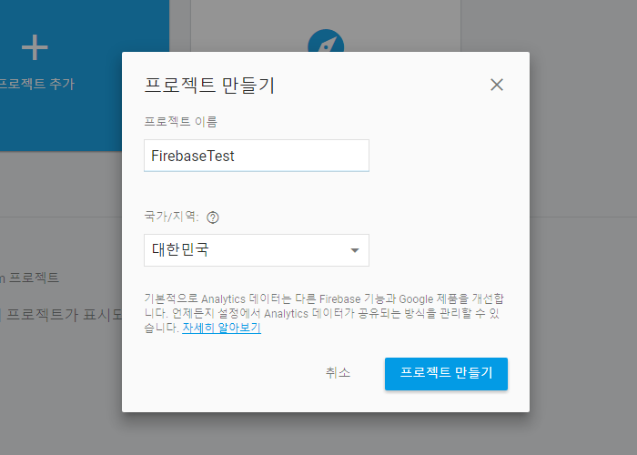
프로젝트 이름을 입력하고, 국가/지역을 선택 후 프로젝트를 생성한다.
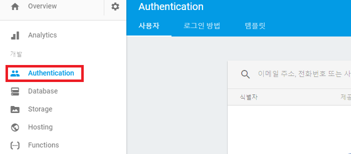
Authentication메뉴를 선택한 후 로그인방법 탭을 선택한다.
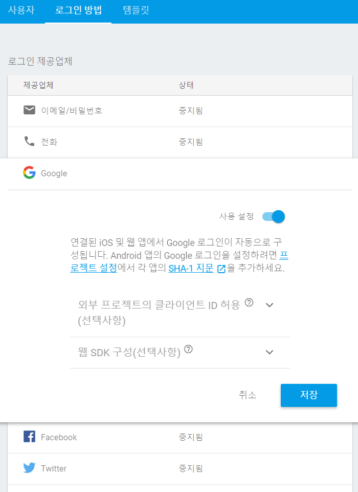
Google을 선택하 사용설정을 선택하여 저장한다.
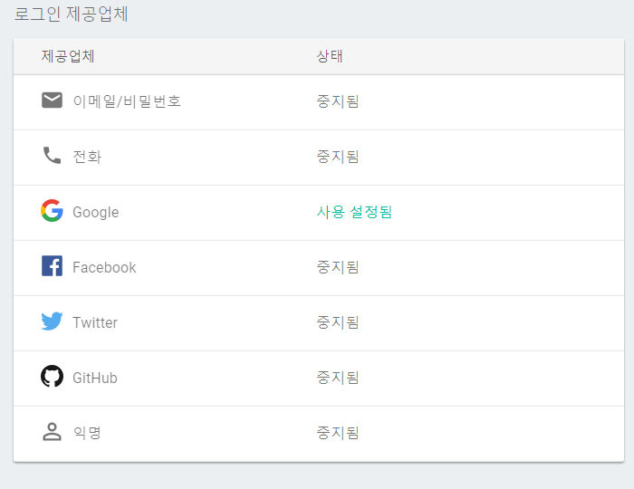
사용 설정됨 상태를 확인한다.
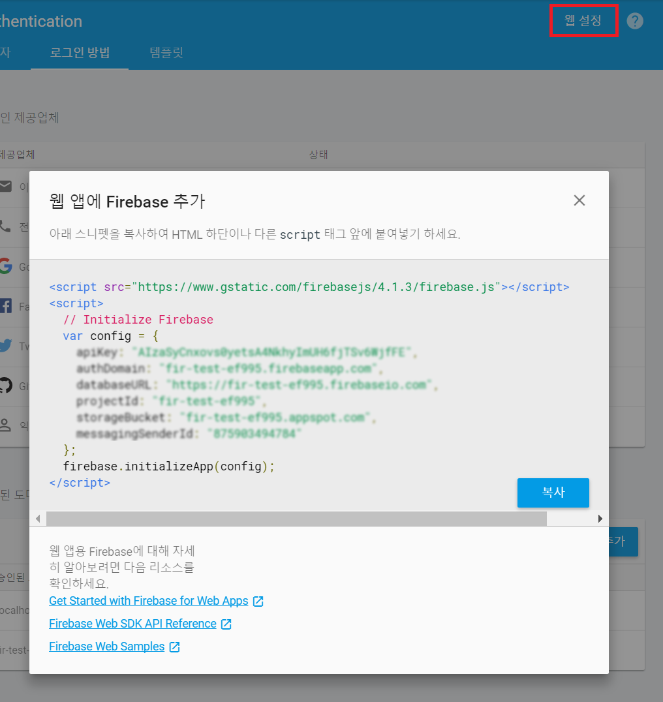
오른쪽 상단의 웹설정을 클릭하면 html에 삽입해야 할 태그가 출력된다.
실행을 위해 Firebase Web Smaples를 클릭한다.
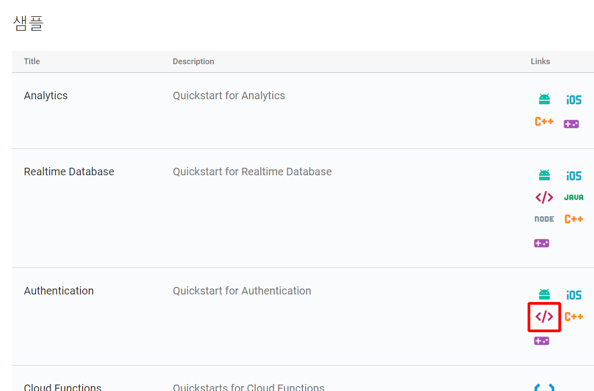
Firebase가 제공하는 서비스의 샘플 링크들이 나열되는데 Authentication의 Web Supported를 클릭한다.
https://github.com/firebase/quickstart-js
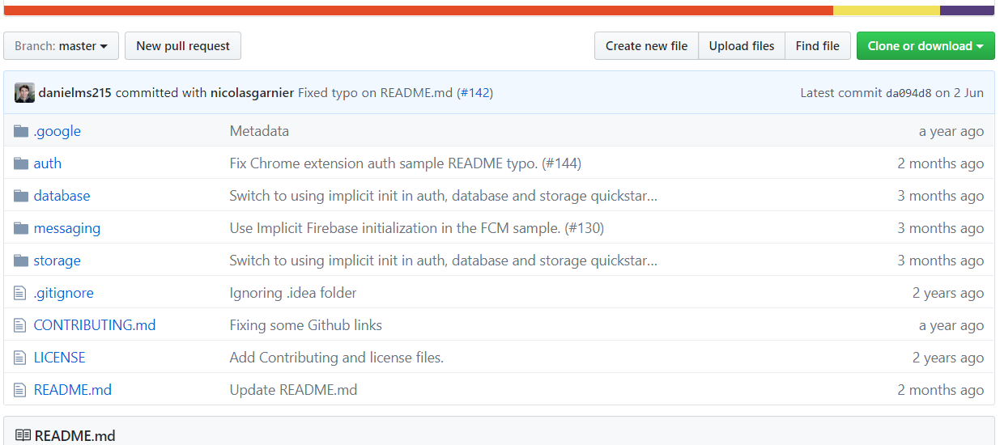
github에서 Sample소스를 다운로드 받아 압축을 풀어 웹서버를 구축 한 뒤에 auth/index.html을 실행한다.
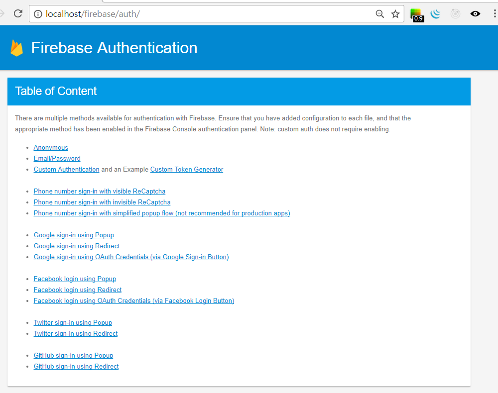
위와 같이 브라우저에서 auth에 관련된 샘플소스 리스트가 나열되는데 여기서 Google sign-in using Redirect를 클릭한다.
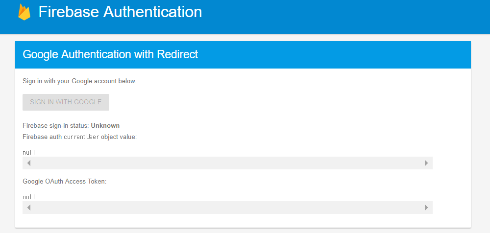
샘플소스를 그냥 실행하면 위와 같이 SIGN IN WITH GOOGLE버튼이 비활성화 되어있다.
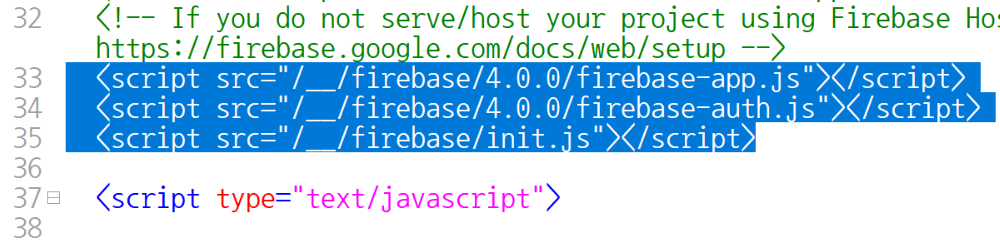
google_redirect.html파일을 열어 해당 부분을 위의 웹설정 클릭시 나왔던 내용으로 대체한다.
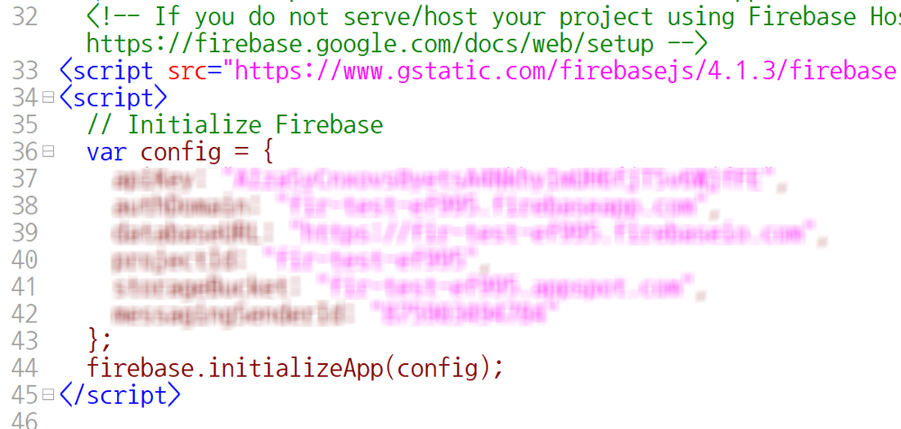
위와 같이 소스를 수정한다.
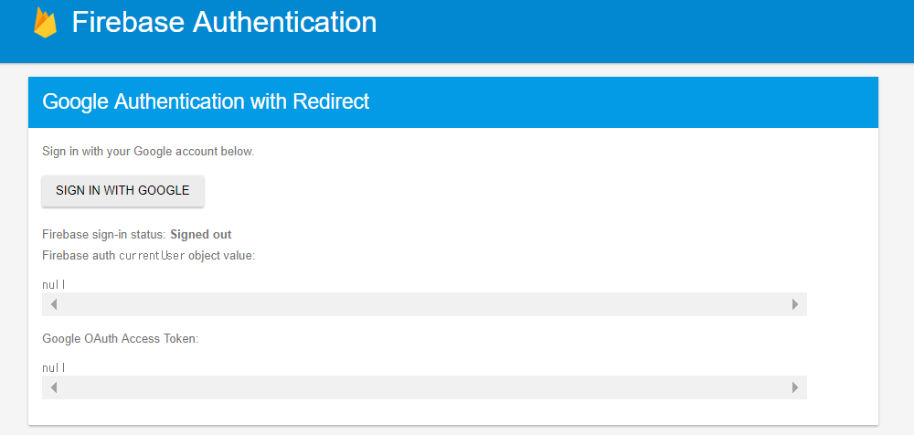
SIGN IN WITH GOOGLE버튼이 활성화된다.
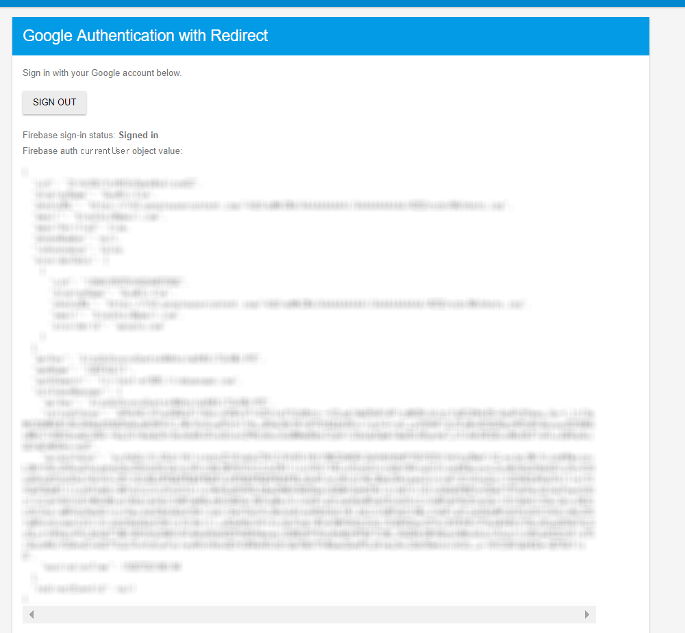
SIGN IN WITH GOOGLE버튼을 눌러 구글 계정으로 로그인을 정상적으로 하면 위와 같이 User정보를 확인할 수 있다.